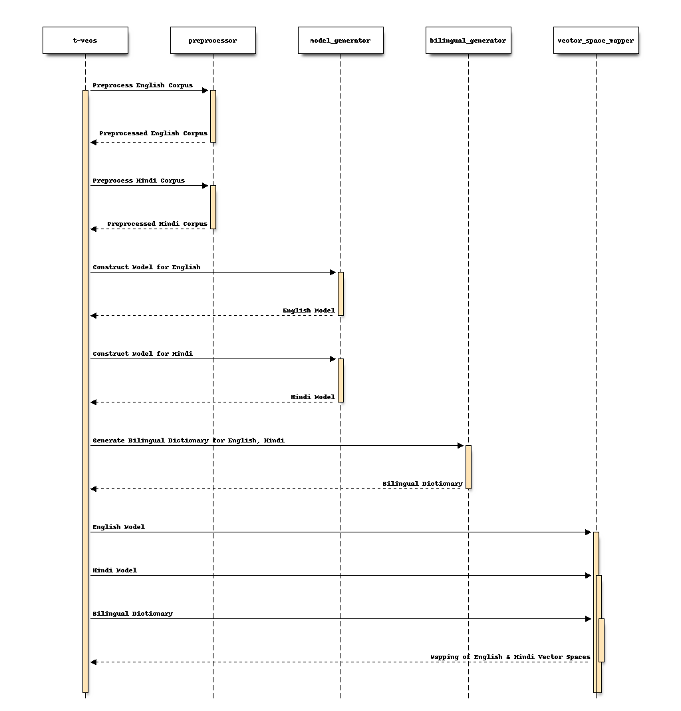
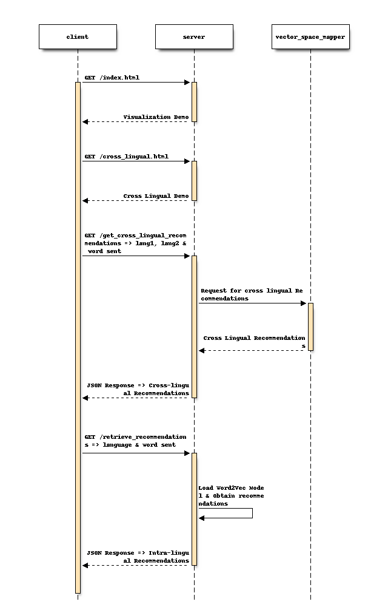
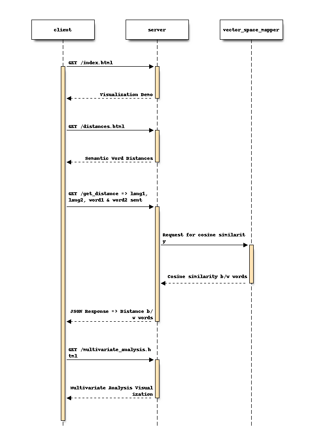
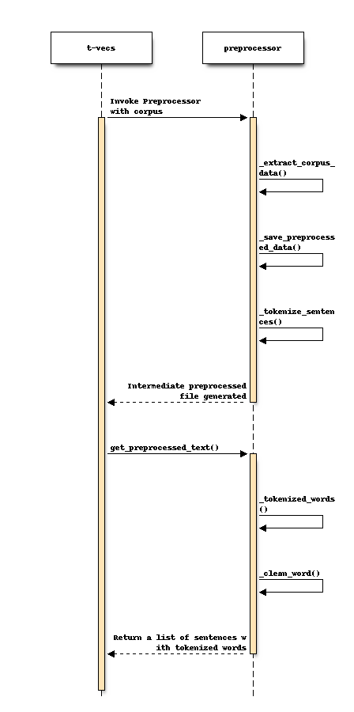
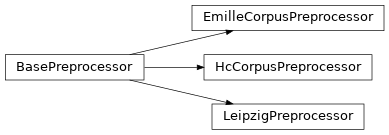

Welcome to T-Vecs’s documentation!¶
The main documentation for the site is organized into a couple sections:
Sequence Diagram for T-Vecs Driver Module¶
Name
Description
t-vecs
Driver Module
preprocessor
Preprocessor for Corpus
model_generator
Word2Vec implementation to Generate Semantic Word Embeddings
bilingual_generator
Generates Bilingual Dictionary
vector_space_mapper
Maps Vector Spaces between 2 Models using a Bilingual Dictionary
Sequence Diagram for Visualization Recommendations¶
Name
Description
client
HTTP Client
server
CherryPy Server
vector_space_mapper
Maps Vector Spaces between 2 Models using a Bilingual Dictionary
Sequence Diagram for Visualization for Distances & Multivariate Analysis¶
Name
Description
client
HTTP Client
server
CherryPy Server
vector_space_mapper
Maps Vector Spaces between 2 Models using a Bilingual Dictionary
Sequence Diagram for Preprocessor¶
Name
Description
t-vecs
Driver Module
preprocessor
Preprocessor for Corpus

Corpus Size
Bilingual Size
Wordsim Dataset
Correlation Score
P-Value
136772323
11291
MTurk-287
0.6268
1.83e-29
136772323
9032
MTurk-287
0.6251
2.85e-29
136772323
4516
MTurk-287
0.6130
6.50e-28
82063393
11291
MTurk-287
0.6196
1.21e-28
82063393
6774
MTurk-287
0.6195
1.22e-28
54708929
11291
MTurk-287
0.5725
1.94e-23
54708929
4516
MTurk-287
0.5579
4.17e-22